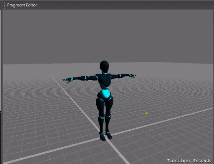
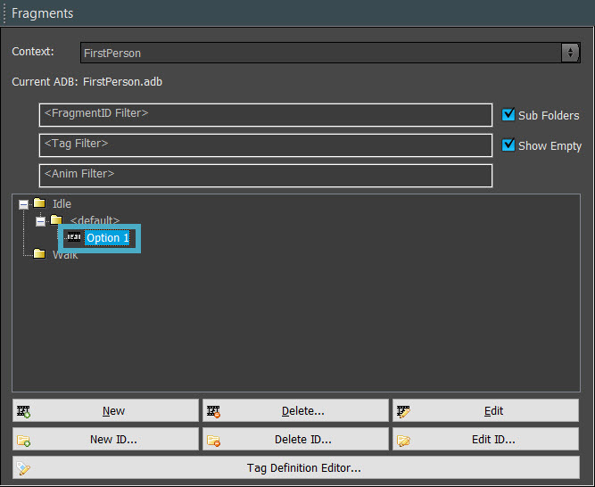
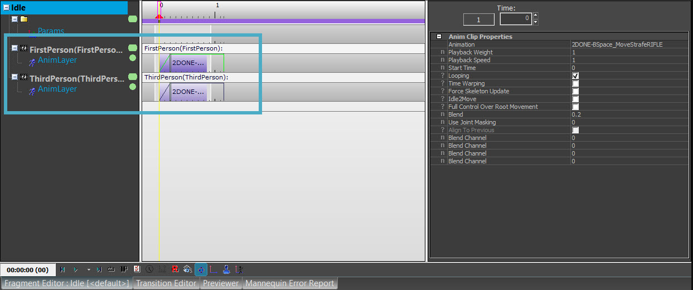
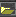

Обзор
В этом уроке объясняется, как настроить анимацию в Mannequin.
Шаги
- Откройте редактор Sandbox и откройте новый или существующий уровень, на котором вы хотите проверить своего персонажа;
- Откройте редактор Mannequin, перейдя в Инструменты → Анимация → Редактор Mannequin;
- В редакторе Mannequin перейдите к Файл → Загрузить настройки предварительного просмотра..., перейдите к Анимации → Mannequin → Предварительный просмотр и открыть Player.xml;
- В редакторе фрагментов вы должны увидеть своего персонажа в Т-позе:

Загруженный персонаж в Т-позе - На панели «Фрагменты» разверните все параметры в разделе Простой и double-нажмите Вариант 1:

Холостой вариант 1 - В правом нижнем углу находятся два слоя анимации: один для первого лица (FirstPerson(FirstPerson)) и один для третьего лица (ThirdPerson(ThirdPerson)), оба с уже настроенной анимацией:

Слои анимации для холостого фрагмента
Поскольку в этом руководстве предполагается, что вы работаете над проектом от третьего лица, нажмите кнопку Слой анимации для ThirdPerson (цветная полоса), затем нажмите Анимация в Свойства анимационного клипа, нажмите на просматривать кнопка
- Поскольку это анимация, которая должна воспроизводиться все время, пока персонаж стоит на месте, включите Зацикливание в Свойства анимационного клипа;
Повторите эти шаги для анимации ходьбы в разделе Прогулка → <по умолчанию> → Вариант 1.и Зацикливание и Искажение времени;
Если у вас есть пространство смешивания (см. предыдущий урок), выберите пространство смешивания вместо анимации ходьбы.
Для большего разнообразия, например, анимации бездействия, вы можете настроить несколько анимационных клипов для одной и той же ситуации.
1. В Фрагменты панель, выберите <по умолчанию> папка для анимации Idle или Walk (в зависимости от того, куда вы хотите добавить анимационный клип);
2. Нажмите Новый внизу панели;
3. В папке <default> появится новый параметр. Повторите шаги 3 и 4, чтобы добавить еще один анимационный клип. Движок автоматически выберет один из двух анимационных клипов, когда персонаж бездействует или идет, в зависимости от того, куда вы добавили анимационный клип.NOTE: Возможно, вам придется добавить слой анимации в правом нижнем углу. Это можно сделать, щелкнув правой кнопкой мыши на ThirdPerson(ThirdPerson) текст и выбор Добавить слой → Анимационный слой.
- Сохраните все изменения, перейдя в Файл → Сохранить изменения.
- Зайди в игру с Ctrl + Г и проверьте свою анимацию, прогуливаясь вместе со своим персонажем.
Если вы не назначили пространство смешивания для анимации ходьбы, вы заметите, что персонаж при вращении вернется в Т-образную позу. Это связано с тем, что не была назначена анимация вращения.
Если у вас нет конкретной анимации вращения, вы можете пока просто использовать анимацию ходьбы:
В Фрагменты панель, перейдите к Ожидание → Поворот → Вариант 1 и выберите Простой анимацию, как это было сделано ранее в шагах 3 и 4.